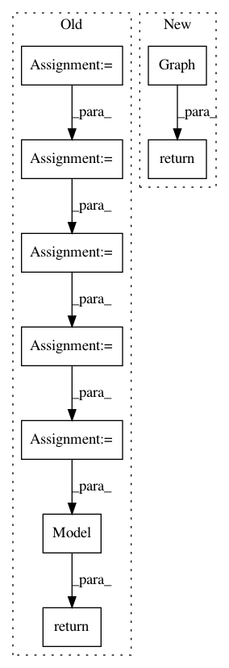

074d16ac217b9cddc04d093d019c61e393522eb5,autokeras/net_transformer.py,,copy_conv_model,#Any#,91
Before Change
def copy_conv_model(model):
node_old_to_new = {}
new_model_input = Input(model.input_shape)
node_old_to_new[model.inputs] = new_model_input
for layer in model.layers:
new_layer = copy_layer(layer)
old_input = layer.input
old_output = layer.output
new_input = node_old_to_new[old_input]
new_output = new_layer(new_input)
node_old_to_new[old_output] = new_output
return Model(new_model_input, node_old_to_new[model.outputs])
def to_skip_connection_model(conv_model):
pass
After Change
def copy_conv_model(model):
graph = Graph(model)
return graph.produce_model()
def to_skip_connection_model(conv_model):
return conv_model
In pattern: SUPERPATTERN
Frequency: 3
Non-data size: 9
Instances
Project Name: keras-team/autokeras
Commit Name: 074d16ac217b9cddc04d093d019c61e393522eb5
Time: 2017-12-30
Author: jhfjhfj1@gmail.com
File Name: autokeras/net_transformer.py
Class Name:
Method Name: copy_conv_model
Project Name: keras-team/autokeras
Commit Name: 4b83c1070cebd0d996ba2cc69779dcb66d5d0032
Time: 2018-05-29
Author: jhfjhfj1@gmail.com
File Name: autokeras/generator.py
Class Name: DefaultClassifierGenerator
Method Name: generate
Project Name: keras-team/autokeras
Commit Name: 7f30b2403fadc4eaad48ceaf6154a626f477f8c8
Time: 2018-05-26
Author: jin@tamu.edu
File Name: autokeras/generator.py
Class Name: DefaultClassifierGenerator
Method Name: generate